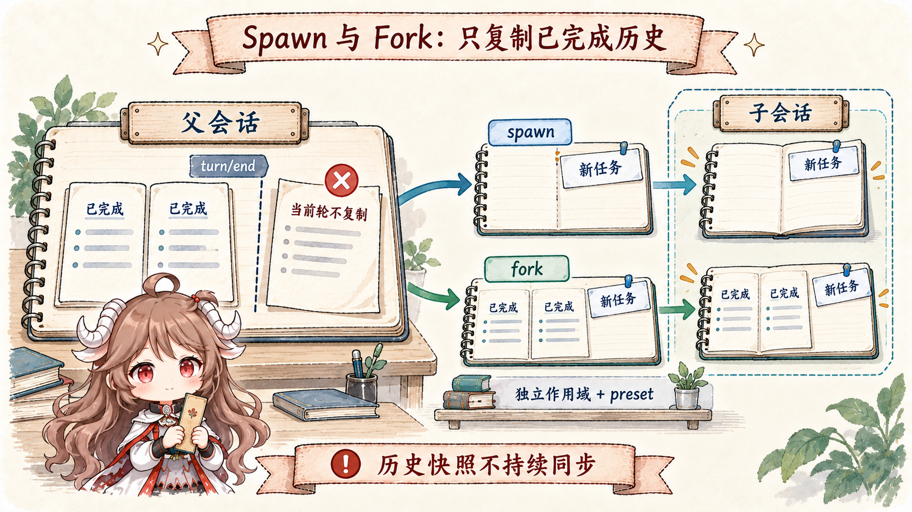
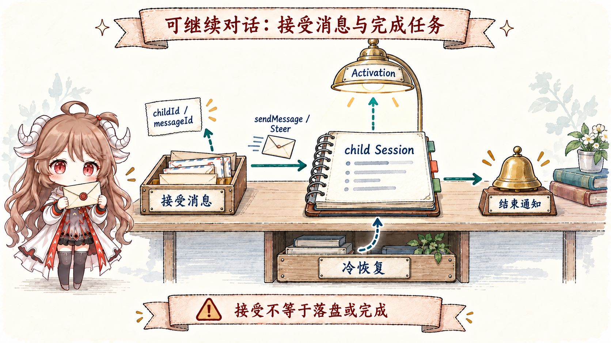
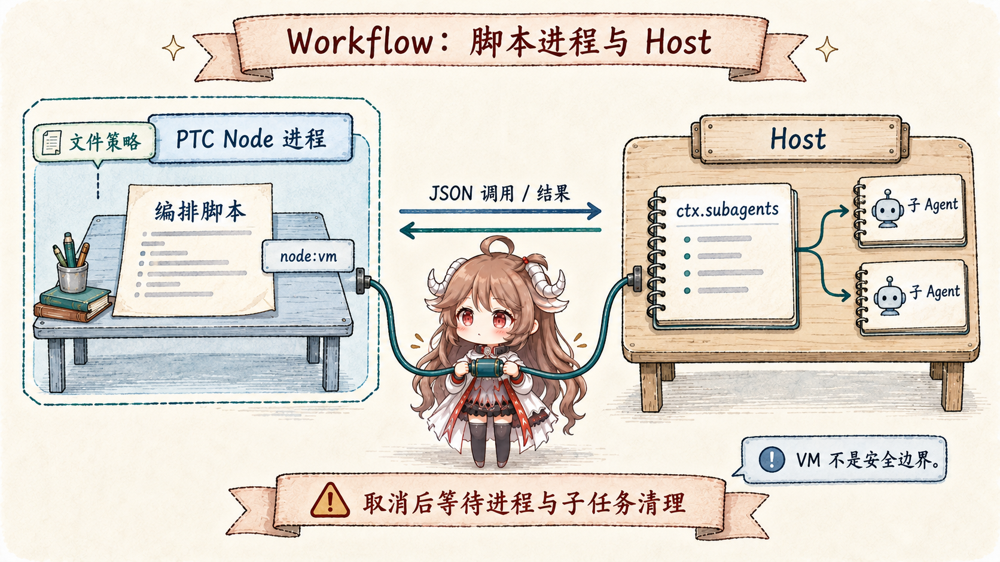
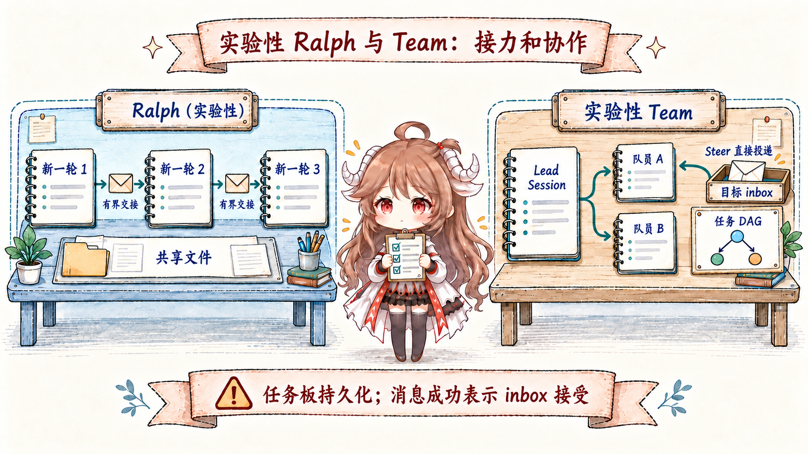

每次委派都要决定上下文来源、结果接收者、取消归属和资源上限。现在本地 spawn、fork 与外部后端统一进入 startActivation()：运行时负责准入、生命周期和清理，消费者选择把结果通知父级，或留给 Workflow 脚本收集。
ctx.subagents 管理子执行；ctx.workflowEngine 承载脚本编排；实验性 Ralph 提供固定的新会话接力；实验性 Team 提供具名成员、直接消息与持久任务板。各层共享子执行机制，同时保留自己的协调状态。
本篇主线。从统一 Activation 接口出发，依次看 spawn/fork 的历史与 preset、消息接受和执行结束、共享容量，再进入 Workflow、Ralph 与 Team 的所有权。
本文核实到 687f282（dsh-v0.2.1-rc.2）。Ralph 与 Team 都位于 packages/experimental，需要显式装配。
一、统一 Activation，按消费者选择结果交付
1.1 本地与外部后端共享准入和清理
SubagentRuntime 注册具名后端，startActivation({ provider, label, request, signal, delivery }) 返回 { childId, messageId?, result, dispose }。本地 spawn/fork 创建可继续的 Session；外部 ACP、DSH SDK、Codex 或 Claude Code 后端执行一次。messageId 只在有本地 inbox 时存在，childId 则统一标识子执行。
delivery: 'parent' 让 runtime 发送结束通知；'caller' 让 Workflow 通过 result 收集结果，并省去父级通知和初始回传指引。本地 parent 交付要求 Session persistence；caller 交付允许临时 child，释放后冷恢复仍需 persistence 与 session query。
tool-subagent 每次只等待激活被接受，就返回 started subagent <childId>。最终输出随后由 runtime 通知父级。旧的 foreground/background 与 startContinuable() 分流已被统一接口替代。
1.2 深度与 capability 在创建前检查
Child header 保存 parentSession 和 delegationDepth。Host 的 maxDepth 默认 1，工具每次委派读取缺省值；工具可显式覆盖，0 禁止该工具委派，provider-managed 交给外部后端。达到上限时工具仍可见，调用会报错。直接服务消费者自行传入可选 maxDepth；Workflow 的 startChild 没有传入它，因此部署需要分别审查这些入口。
后端 capability 决定能否接收模型覆盖、独立 preset、结构化输出或深度上限。当前本地 spawn 支持独立 agentPreset；fork 和外部后端拒绝该选项。可选模型选择还需要 agentOptions capability，路线清单在新顶层 Session 创建时采样并持久化，已有 Session 继续使用原清单。
二、spawn 与 fork：历史种子和组合选择
2.1 Spawn 空历史；subagent fork 保留完整轮次

spawn 不传 seed，child 接收独立任务；fork 的 completedTurnPrefix() 仍复制到最近一个 turn/end。正在调用委派工具的当前轮被排除。父级尚无完整轮次时，子级从空历史开始；这个 seed 只捕获一次，后续父级事件不会同步。
Session 通用 fork API 另有精确事件前缀与开放尾部补齐机制，第三篇会展开。这里的 subagent_fork provider 继续使用完整轮次策略，两个入口的截取条件各自明确。
2.2 Preset 决定新 child 的 persona 与工具
applyChildComposition() 为每个 child 创建独立 scope。省略 agentPreset 时加入父级当前使用的 preset revision；spawn 显式选择 id 时挂载该 preset 当前可用 revision，即使 id 与父级相同，也可能选到更新版本。persona 与工具插件现在放进 preset；旧 tool-subagent.persona 和 toolFilter 配置会直接触发迁移错误。历史 descriptor 中的旧字段仍用于冷恢复兼容。
Provider、model 和 reasoning effort 优先继承父级最后一次记录的请求，尚无请求时回退创建选项；maxTokens 保留配置值。切换路线而不指定 effort 会清除旧值。本地 spawn 和 fork 都由统一 manager 管理为可继续 child；同路线 fork 的缓存复用取决于最终请求前缀、工具定义和模型路线。
工作目录在启动时捕获：相对 cwd 基于父级当时目录解析，省略时继承该目录；子级自身目录写在继承历史之后，后续继续与恢复沿用它。权限快照独立传递：approval 服务存在时固定为 never，显式 sandbox override 与 permission preset 身份被捕获，权限根目录仍沿用父级来源。独立 cwd 不会自动创建独立 worktree。
三、接受消息、执行结束和资源释放
3.1 发布前取消与发布后 dispose
SubagentActivation 将 startActivation() fulfill 定为发布点。传入 signal 管理发布前取消；发布后调用方用 dispose() 停止这一轮 Activation，并等待其 descendants、尚未结束的启动与资源清理。旧句柄的 dispose 不会取消同一 Session 后来恢复的新 Activation。
result 在 teardown 与通知处理后 settle。结果捕获失败会在清理后 reject；清理失败通过 dispose() 报告并标记生命周期失败，已经捕获的执行结果仍保留。使用服务的消费者需要同时处理执行结果与清理结果。
3.2 可继续 Session 与驻留 Activation

本地激活的初始 prompt 被 inbox 接受后即可返回 childId 与 messageId，此时 turn 可能尚未开始，消息也可能尚未写入 Session log。每个 child 同时最多有一个进程内 Activation；持久 Session 可以跨多次驻留继续使用。
SubagentManager 的 sendMessage() 要求准确的 live sender 和直接父子关系。工作中的目标在最近 step 接收 Steer，空闲目标启动新一轮；直接 child 可冷恢复。人类输入另有 Queue / Steer，Queue 进入后续轮次。interrupt() 取消当前 turn、保留 inbox 与已发布 descendants；暂停的队列可能需要下一次 waking send。
运行时结束通知报告 outcome 与最终输出；模型主动消息保留发送者身份。接受回执只确认 inbox 已接收。尚未入日志的已接受消息仍可能在崩溃中丢失，给父级发消息还需要父级存活。仅有暂停 inbox 的空闲 child 可以保持驻留，但 Host completion 只等待活动工作、待启动 child 和清理，不被这类空闲 inbox 拖住。
3.3 本地与外部后代共享容量
ActivationPool 的 maxActiveSubagents 默认 8，现在覆盖同一树的本地和外部 descendants，root 自身不占槽。创建和冷恢复进入物化阶段后，在重建 Agent 或启动外部后端前同步预约；等待子级的父级、待处理 inbox 和正在清理的 Activation 继续占槽，直到清理结束才释放。满额直接报 ACTIVATION_LIMIT_REACHED。
每次启动或恢复读取当前容量，降低上限会拒绝新增激活，已运行的 child 继续执行。已驻留 child 收消息复用原槽。父级自己的 subagentCatalog projection 保存成员目录；listChildren() 按父级事件顺序读取直接 children，优先使用 live 状态。递归发现只读取可达本地 child 的目录，不加载 Agent，也不唤醒 child；外部 child 是叶子。
const activation = await ctx.subagents.startActivation({
provider: 'spawn', label: 'review', delivery: 'caller', signal,
request: { parent, prompt: [{ type: 'text', text: 'Review the patch' }] },
})
try {
const result = await activation.result
// 验证结果中的证据，再接受任务结论。
} finally {
await activation.dispose()
}四、Workflow 把脚本放进 PTC 进程，由 Host 管理 children
4.1 Script 是 control plane，Agent 仍在 Host

PTC workflow engine默认以 executionMode: per-call 为每次运行启动新 Node 进程，复用 PTC 的启动、传输与文件 sandbox provider。脚本仍使用 args 和 agent()、parallel()、pipeline()、phase()、log()；Host binding 把请求交给 ctx.subagents，Host 用 delivery: caller 保有 child Activation，脚本只收发 JSON，不把 Agent 对象搬进 guest。当前 engine 要求 TypeScript PTC provider；Python composition 必须关闭这组 workflow 消费者。Node runtime 还支持显式选择 persistent-in-memory，engine 会按 programFormat 适配 REPL；内存保留仍不提供脚本进度的崩溃恢复。
跨进程值必须是无损 JSON；function、cycle、稀疏数组、exotic prototype、non-finite number 和嵌套 undefined 都会被拒绝。默认 maxConcurrentAgents: 0 按 CPU 解析，maxTotalAgents: 1000，单次 parallel/pipeline 最多 4096 items；请求只能降低 total cap。它们是正常 helper 调用的协作限额，不是 Host 强制安全配额；PTC 的 maxPendingCalls 还要为 child start、result、dispose 与 progress 留出余量。
4.2 文件策略、取消和清理各自保证什么
调用者 Session 的 standing file policy 与 cwd 决定脚本进程的文件访问范围；程序可见的 process.env 为空，node:vm 仍只约束常规 API，真正的文件限制取决于所选 OS sandbox provider，且不限制网络。engine 请求 timeoutMs: null，没有整体时长上限；初始同步片段默认有 syncTimeoutMs: 5000，调用方 deadline 与 abort signal 仍生效。
取消会立即 abort PTC 进程以及待启动和已启动的 children。晚于取消才返回的 child 也要 dispose；调用者的 dispose()必须等待进程结束与 child 清理，没有独立的放弃清理计时器。运行错误收敛为 stopReason: error，取消为 cancelled；普通 child failure 在脚本侧返回 null，由脚本决定后续动作。重启不会恢复脚本中间进度。
五、实验性 Ralph 与 Team 的协调状态
5.1 Ralph 以 fresh child 和有界报告接力

ralph 已迁到 packages/experimental/tool-ralph，仍是固定 foreground workflow。只有直接人类明确要求 Ralph 式 fresh-agent 迭代时才使用。每轮启动一个无 parent seed 的 structured-output child，以 immutable objective、轮次、共享工作区说明和上一份 bounded handoff 构成 prompt。默认最多 256 轮，handoff 上限 16384 字符。
报告状态为 continue、complete 或 blocked；最终工具结果是 complete、blocked 或 budget-limited。complete 与 blocker 来自 worker 自述，需要依据实际产物验收。普通 child failure 终止 run，不自动重试；workspace 保存跨轮长期状态，未写入的 reasoning 随 child 消失。
5.2 Team 持久化成员与任务，直接投递消息
Agent Team 以 root Session id 作为隐式 TeamId，具名 teammate 是可继续的直接 child。Lead log 保存 team/member 与 revisioned team/task，这些更新 append 并 flush 后才返回成功。任务依赖保持 DAG，修改携带 expectedRevision，过期版本被拒绝。
sendMessage() 直接把消息 Steer 到目标 inbox：发给 Lead 时调用 Agent.steer()，发给 teammate 时通过 Host continuation 路径，可冷恢复目标。返回 MessageId 表示接受；处理与持久化随后沿目标 Agent 的普通策略进行。发送者身份保留为 agent-message，正文加 Team message from <name>: 前缀。
Team 已停止写入新的 team/message/queued 与 delivered，未接受的发送意图不保留，也不在重启后自动重试或去重显式重发。历史 mailbox 记录仍可读取，旧的未投递记录不再重放。成员仍共享 checkout；writeScopes 提供路径重叠提示，文件锁与 worktree 隔离需由外部协调。任务 owner 不随中断、空闲或进程退出自动释放。
六、用所有权组织多 Agent 工作
- 分开身份与执行期。本地 Session 可持续存在，每次 Activation 拥有自己的取消与清理。
- 分开消息回执与任务验收。inbox 接受、执行结果和实际产物各自提供一层证据。
- 按入口检查限制。工具深度、共享激活容量与 Workflow helper 上限在不同位置生效。
- 明确共享目录责任。Preset 决定工具组合，sandbox 决定访问权限，协调者处理并发写入和最终审查。
最后一篇回到 Cordis，追踪 Inspect 与 plugin_manager 如何查询运行时、安装持久 profile bundle，并判断安装接受、profile 写入和运行端应用是否完成。